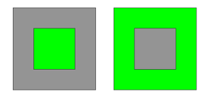
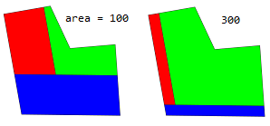
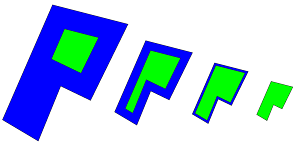
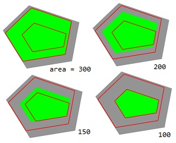

setbackToArea operation
area float The desired area of the setback remainder. Must be >0.
minDistances, maxDistances float[] An array containing setback distances separately for each face edge. The applied setback will be in this range.
uvSet, selector, operator, operations All other parameters are the same as for the setback operation.
The setbackToArea operation is similar to the setback operation. The difference is that setback distances are automatically chosen such that the remainder fulfills a given area.
If no minDistances are given the setback distances are chosen to be equal for each edge. If minDistances are specified then these distances are increased by a common offset such that area is satisfied. Optionally, maxDistances define maximum values for the applied distances.
The desired area cannot be achieved when the minimum distances are too large, the maximum distances are too small or the area of the current shape is smaller than the specified area.
The remainder depends on the setbacks of selected edges. If you are only interested in the remainder shape you still have to provide a setback selector:
setbackToArea(area) { all = NIL | remainder = X. }
Geometry tags
The operation automatically applies semantic component tags to the resulting edge components. Refer to the setback operation for more details.
Related
Examples
Setback to area

Left --> setbackToArea(100) { all = NIL
| remainder = Green }
Right --> setbackToArea(geometry.area - 300) { all = Green }
Left: A square shape with an area of 400 is setback to an area of 100. Right: A setback is performed such that all setback faces have an area of 300.

attr area = 100
Lot --> setbackToArea(area) { front = Blue
| left = Red
| remainder = Green }
A L-shaped setback to area 100 and 300.

Lot --> setbackToArea(100) { all = Blue
| remainder = Green }
A setback to area 100 on the same shape at different scales.
Lower and upper bounds

attr area = 300
const minDists = comp(fe) { all : rand(3) }
const maxDists = comp(fe) { all : rand(3, 6) }
ShowDists(dists) -->
setback(dists) { all = NIL
| remainder = comp(e) { all = Red } }
Lot -->
ShowDists(minDists)
ShowDists(maxDists)
setbackToArea(area, minDists, maxDists)
{ all = NIL | remainder = Green }
The setback to restricted by minimum and maximum distances (highlighted in red).